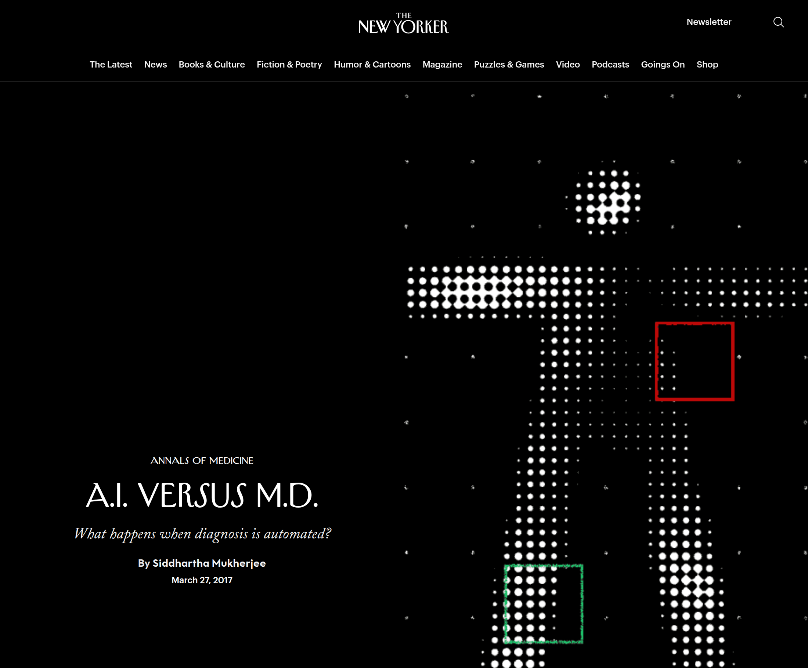
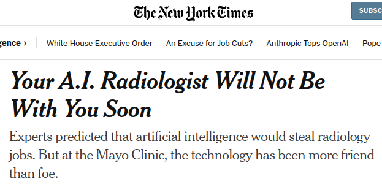

name: title layout: true class: cover title-slide --- count: false counter: false .boxed-content[ .pull-left.center[ <img src="../remark/assets/ohbm2026-logo.png" width="130%" /> ] .pull-right.center[ <br /> <br /> <br /> <br /> <br /> # Using Large Language Models (LLMs) in Neuroimaging Research ## LLMs for Coding *Oscar Esteban* <object type="image/svg+xml" data="images/qr-talk-url.svg" style="width: 40%"></object> ] ] ??? --- name: nofooter layout: true .perma-sidebar[ <p class="rotate"> <a rel="license" href="http://creativecommons.org/licenses/by/4.0/"><img alt="Creative Commons License" style="border-width:0; height: 20px; padding-top: 6px;" src="https://i.creativecommons.org/l/by/4.0/88x31.png" /></a> <span style="padding-left: 10px; font-weight: 600;">OHBM Educational — LLMs for Coding (June 14<sup>th</sup>, 2026)</span> </p> ] --- name: footer-nobar template: nofooter layout: true .footer[ .footer-logo-row[ <img src="../remark/assets/ohbm2026-footer.png" height="25px" /> ] ] --- name: footer template: nofooter layout: true .footer[ .footer-logo-row[ <img src="../remark/assets/ohbm2026-footer.png" height="25px" /> ] .footer-bar[] ] --- class: no-counter count: false ## OHBM 2026 DISCLOSURES .section-mark.large[ I have no conflicts of interest in relation to this presentation to disclose. ] --- class: no-counter count: false ## ONSITE WiFi .section-mark[ Network ESSID: ## OHBM 2026 Password: ## attendee ] --- count: false .boxed-content[ <iframe src='https://wall.sli.do/event/bnbXrk8WP6djx1a7d4m88u?section=5b9e22bb-556b-433f-a3ff-0aa97c8dcc9a&integration=shared-present-mode' style="width: 100%; height: 600px; border: 0"></iframe> .center[<a href="https://app.sli.do/event/bnbXrk8WP6djx1a7d4m88u">Click here to participate</a>] ] ??? --- # Models are limited .boxed-content[ > In QSIPrep (the diffusion MRI preprocessing pipeline by PennLINC), which exact command-line flag selects the output spaces, > e.g., to also write preprocessed DWI in `MNI152NLin2009cAsym` template space? > Give the exact flag and a one-line example invocation. Be concise and definitive. ] ??? Bridge --- # From memory alone — it fabricates .boxed-content[ <div style="margin-top: 15px" class="asciicast" id="grounding-1-training" data-speed="4"></div> ] ??? --- # Grounded on the web — right, but slow & costly .boxed-content[ <div style="margin-top: 15px" class="asciicast" id="grounding-2-web" data-cols="110" data-rows="24" data-speed="4"></div> ] ??? --- # Grounded on the wiki — right, fast, cheap .boxed-content[ <div style="margin-top: 15px" class="asciicast" id="grounding-3-wiki" data-speed="8"></div> ] ??? --- # Measured: grounding beats a bigger search (*n*=30) .boxed-content[ <object type="image/svg+xml" data="images/qsiprep-grounding.svg" style="width: 100%; padding-top: 40pt;"></object> ] .center[*From memory: instant, cheap, **always wrong**. Web: right, but slow & expensive. Wiki: **right, fast, cheap.***] ??? --- # This is your edge, not your obituary .boxed-content[ .pull-left[ <p></p> .center[*The New Yorker · March 27, 2017 — the fear*] ] .pull-right[ <p></p> .center[*The New York Times · May 14, 2025 — the reality*] ] ] .center[The headlines argue about whether AI replaces the **expert**. But the **devops and the workflows** — the "glue," the pipelines, the cluster wrangling — are exactly what AI does *well*, and a large part of what a postdoc does today.] .center[### Learn to drive these tools — and keep your judgment in the loop — before something else does.] ??? - Open on stakes, not abstractions. 2017 fear (New Yorker, Mukherjee) → 2025 reality (NYT, Mayo Clinic): "more friend than foe." - Callback to María; extends Brent's point. The imperative sets up *why* we need the rest of the talk. --- # But speed alone isn't trust .boxed-content[ <br /> .large[**AI does not plug training gaps.**] .larger[Most scientists were never trained to write code — AI just *raises the stakes*.] <br /> .large[**You own every line the agent writes.**] > "Any code generated by an AI coding tool *must* be verified to ensure that the computations are correct." — *Poldrack* <br /> .large[So the answer isn't *vigilance* — policing a tool. It's **structure**: a constitution, version control, provenance, domain expertise in the loop.] ] .center[### Structure — not vigilance — turns LLM *speed* into **trustworthy speed**.] ??? - #2 quote is verbatim Poldrack — *Better Code, Better Science* (the authoritative source; one-line nod). - This is the spine: structure is scaffolding for a partnership, **not** a cage to police a tool. The same line lands again at the close. --- # What I'll show you — three rising stakes .boxed-content[ **① Where mistakes don't matter** — the two skills I built to stop trusting, then *start* trusting, my **references.** **② A run you'd defend** — driving ~2,200 subjects through fMRIPrep on an HPC cluster I never log into, and the real bugs we fixed *together*. **③ The edge of what the model knows** — where it still fabricates, and the *grounding* that fixes it. ] .center[*The thread through all three:* **stakes rise, so the structure rises with them.**] ??? - Roadmap framed as escalation, not three flat threads. The "stakes rise" line is the spine in motion — each act adds the structure its stakes demand. --- # ① Start where it doesn't (yet) matter .boxed-content[ Don't learn to fly an AI on your **flagship pipeline.** Start on small, **low-stakes** projects — ideally ones that aren't even science: near-zero cost of mistakes, fast feedback, and you learn the **failure modes** before they touch your data. I built a handful — a **CV manager**, **manuscript handling**, **grant-review panels.** Every one taught me how the tools behave. But the one that **bugged me enough to fix properly** was the most mundane of all: .center[### references.] ] .center[*Pick something that saves you time in the long run. Mine started with a problem I couldn't ignore. (next)*] ??? - Demote the old four-example menu to one line. The whole act now goes deep on references. --- # The pain: it made up a paper .boxed-content[ Asking an agent for related work, I kept hitting the same wall: it handed me citations that were **fluent, perfectly formatted, plausible — and did not exist.** Right-looking authors, a real-sounding journal, a DOI that resolved to nothing. .center[*A fabricated reference is worse than no reference: it survives a skim and dies in review.*] I didn't want **vigilance** (re-checking every citation by hand). I wanted **structure**: a tool that only ever returns papers that **provably exist.** ] .center[*So I built one — and it took an afternoon.*] ??? - [needs user: drop in the actual fabricated citation for a concrete gasp — otherwise keep generic.] - Motivation for /s2-query. "Structure, not vigilance" echoes the spine from Part 0. --- # First, what's a *Skill*? .boxed-content[ A **Skill** is a folder the agent can choose to use. Minimum: one `SKILL.md` — YAML frontmatter (between `---` fences) plus instructions: ```yaml # SKILL.md frontmatter name: s2-query description: Search Semantic Scholar for academic papers... Use this whenever the user wants to find references. allowed-tools: Read, Bash ``` - The **description** is the trigger: the model reads it and decides *when* the skill applies. - The body is **instructions**; alongside it you ship **`scripts/`** the agent runs. - Same idea in Claude Code and Codex — portable, version-controlled, yours. ] .center[*The references fix is just **two** of these: `/s2-query` and `/zotero`.*] ??? - Tight explainer so the next slides land. Frontmatter is verbatim from the real skill. --- # I didn't write it from scratch — I asked `/skill-creator` .boxed-content[ The prompt *(reconstructed — replace with your own):* > **/skill-creator** — make a skill `s2-query` that searches Semantic Scholar and returns **structured JSON** (title, authors, year, venue, DOI, citation count, abstract). Use the S2 graph API; **stdlib only**; print a table to stderr and JSON to stdout so other skills can pipe it. `/skill-creator` scaffolds the folder for you: ```bash init_skill.py s2-query --path skills --resources scripts # -> skills/s2-query/SKILL.md (frontmatter + TODO sections) # -> skills/s2-query/scripts/ ``` ] .center[*You describe the contract; it lays the skeleton; you fill in the script.*] ??? - [needs user: paste your actual /skill-creator prompt.] init_skill.py usage is verbatim from the real skill-creator. --- # The skill, for real — 207 lines, stdlib only .boxed-content[ .pull-left[ ```text s2-query/ ├── SKILL.md └── scripts/ └── s2_search.py ``` ```yaml # SKILL.md frontmatter (verbatim) name: s2-query description: Search Semantic Scholar... Returns structured results (title, authors, year, venue, DOI, citation count, abstract)... allowed-tools: Read, Bash ``` ] .pull-right[ ```python S2_BASE = ( "https://api.semanticscholar" ".org/graph/v1/paper/search") S2_FIELDS = ( "paperId,title,authors,year," "citationCount,abstract," "venue,externalIds") # stderr -> human table # stdout -> JSON array ``` The JSON-to-stdout choice is the whole trick: **`/zotero` pipes it.** ] ] .center[*No frontier model in sight — just a 207-line script with one clear contract.*] ??? - All verbatim from ~/.claude/skills/s2-query. Pipe-ability is what makes the two-skill combo work. --- # Search → curate, in one place .boxed-content[ <div class="asciicast" id="s2-zotero" data-speed="8" data-rows="26" data-cols="120"></div> ] .center[*Every hit provably exists. But finding papers is half the battle — the library itself rots.*] ??? - `/s2-query` search, then `/zotero`. If the cast won't play, talk through the two commands live. --- # `/zotero` — keeping the library sane .boxed-content[ The second skill syncs a Zotero library with a CSL-JSON `library.json`: | `/zotero ...` | does | |---|---| | `pull` / *(none)* | Zotero → `library.json` | | `push` | new items → Zotero | | `sync` | pull then push | | `status` | counts, last sync, unpushed | | `search QUERY` | S2 → **CrossRef-verify** → CSL-JSON → dedupe → push | The `search` path is why a new citation is **guaranteed real and on-topic**: every DOI is verified against CrossRef before it touches the library. ] .center[*`/s2-query` finds it · `/zotero` verifies, de-dupes, and files it. Vigilance, automated.*] ??? - Subcommand table verbatim from zotero/SKILL.md. CrossRef verification = the trust guarantee. --- # Two chores I handed off — to the *agent*, not a subcommand .boxed-content[ These aren't built-in commands. They're plain-English asks the agent runs **over `library.json`, using `/s2-query` as a verifier:** .pull-left[ **"Organize my library by topic."** The agent reads every entry, clusters by abstract, and writes back Zotero collections — *fMRI preprocessing*, *diffusion*, *brain age*, … ] .pull-right[ **"Which of my preprints are now published?"** For each preprint it re-queries Semantic Scholar, finds the published DOI, and updates the entry in place. ] *The skill supplies trustworthy data + a verified search; the agent supplies the judgment to reorganize.* ] .center[*Low stakes, real time saved — and every change is a small, reviewable diff to `library.json`.*] ??? - HONEST framing: organize-by-topic and find-published-preprints are agent tasks over the library, NOT zotero subcommands. Both are real free-tier pains. --- # What the on-ramp taught me .boxed-content[ .pull-left[ **Cheaper** than a web search for the same paper. **Faster** than doing it by hand. **100% sure** the citation exists and is on-topic. ] .pull-right[ And the library finally stays **tidy** — preprints updated, topics sorted, space reclaimed on the free tier. All of it: **low stakes**, fast feedback, my judgment never on the line. ] ] .center[### Zero stakes, zero ceremony. Now bet something real on it.] ??? - Closes Act ①. The bet line bridges into ABIDE. [old Act ① closing line reused.] --- class: slido count: false .section-mark[ .slido-tag[Slido · live poll] .slido-q[Would you let an agent drive a 2,200-subject HPC run on a cluster you never log into?] .slido-options[ **A.** No way · **B.** Maybe, with guardrails · **C.** Already do ] .slido-join[ TODO: wire Slido event code / QR ] ] ??? - Transition into Act ②. Their answer primes the "delegation, not abdication" thesis. --- # ② A challenge I set myself .boxed-content[ .pull-left[ February 2026. A project I'd been **putting off for years:** run **all of ABIDE I + II** through fMRIPrep. ~2,200 subjects. 43 sites. An HPC cluster. A heavy lift I never felt like starting. ] .pull-right[ So I changed the question: ### "Can I get *Claude Code* to drive it — while I never log into the cluster myself?" …then I pulled up my wallet. *(more on that later.)* ] ] ??? - Personal stakes: a lift I'd avoided; reframed as "delegate the execution." Wallet line teases the cost bookend at the close. --- # …and it did — and I never logged into the cluster .boxed-content[ A **YODA / DataLad** superdataset, driven end-to-end by the agent **under my direction** — from my laptop, over SSH, the pipeline managed itself: .center[`SLURM job array` → `reconcile` site branches → `audit` annex → `publish overlay`] - ~2,200 subjects · **43 sites** · fMRIPrep 25.2.4 on **Curnagl** (UNIL HPC) - the agent wrote and submitted the arrays, watched `squeue`, diagnosed failures, **resubmitted** - every run wrapped in `datalad containers-run` — **full provenance**, nothing run by hand ]  ??? - Remote-driving spectacle: the human never touches the cluster. ~480 commits over two months — the "HPC glue" my abstract promised. --- # Real stakes need a written contract .boxed-content[ Now that the stakes are real, the **first piece of structure** appears. I own the **specification**; the agent executes inside it. That contract lives in a `CLAUDE.md`: ```markdown ## Code conventions - Python scripts use only stdlib (no pip dependencies beyond DataLad ecosystem) - `build_abide_both.py` supports `--dry-run` for safe testing - Shell scripts use `set -euo pipefail` - Scripts must be runnable from repo root using relative paths - Commit style: conventional prefixes (`enh:`, `fix:`, `doc:`, `chore:`) ``` .center[*All executions recorded with `datalad containers-run` — provenance is non-negotiable.*] ] ??? - Verbatim: `abide_fmriprep/CLAUDE.md` lines 390–396. The rules are the spec I own; the agent works within them. This is structure piece #1, earned by the stakes. --- # Steering moment ①: a bug we caught together .boxed-content[ Shell globs were passed **literally** to `datalad get/drop` — "path does not exist." I named the invariant (*only fetch symlinks that actually exist*); the agent wrote the guarded loop: ```diff -datalad get "${SUBJECT}/ses-1/func/..._desc-preproc_bold.nii.gz" +for f in ${SUBJECT}/ses-1/func/..._desc-preproc_bold.nii.gz; do + [ -L "$f" ] && datalad get "$f" 2>/dev/null || true +done ``` The agent had the breadth to sweep every site; **I** supplied the invariant that made the fix correct. ] .center[*Normal engineering friction at scale — not an "AI mistake." Diagnosed* with *the agent.*] ??? - Glob hunk verbatim from commit `4b9e640` (`code/analysis_extract.sbatch`). --- # Steering moment ②: the "ghost subjects" .boxed-content[ After a push race, some subjects had metadata on `master` but their data **stranded** on a compute node. The agent could sweep all 2,194; **I** had to decide what counted as a ghost: ```bash for sub in $(git ls-tree --name-only master | grep '^sub-'); do missing=$(git annex find --in here --not --copies-of web -- "$sub/" | wc -l) [[ "$missing" -gt 0 ]] && echo "$sub: $missing files with no remote copy" done ``` Breadth from the agent; the **definition of "broken"** from me. ] .center[*Breadth from the agent, judgment from me — diagnosed* with *it, resolved* under *my direction.*] ??? - Ghost detection from `docs/HANDOVER.md §1.1`. Cleanup commits `8f94b75f` / `522b77a6`. - [needs user: a 3rd memorable steering moment would round out the set.] --- # An honest record — and who it's for .boxed-content[ .pull-left[ **62 of ~480 commits** carry an agent co-author. Every one: - has **me as sole author** — I read it and committed it, - uses a **conventional, semantic** message, - is **small and revertible.** *Small, curated commits aren't just for me — they protect whoever has to **review.** An AI can write a 2,000-line PR in four minutes; that cost lands on a human.* ] .pull-right[ ``` fix: resolve globs before passing to datalad get/drop Shell globs in datalad get arguments are passed literally (not expanded)... Co-Authored-By: Claude Opus 4.6 (1M context) <noreply@anthropic.com> ``` **The open-source contract:** trace every change to an issue · write your *own* commit & PR messages · never paste secrets or unlicensed code into a prompt. ] ] .center[*You own every line — including the social cost of shipping it.*] ??? - `git log --grep='Co-Authored-By: Claude' | wc -l` → 62. Trailer verbatim from commit `4b9e640`. - Etiquette folded onto the commits theme: the open-source social contract, pointed for an audience building shared tools. [MERGE of old "honest record" + "work with humans".] --- # Did the science survive? .boxed-content[ .pull-left[ I replicated **Abraham et al. (2017)** — autism classification from resting-state connectivity. **The preprocessing choice (C-PAC vs fMRIPrep) explained < 1 % of the accuracy gap.** A real, defensible result — *executed* mostly by the agent. ] .pull-right[ **Why it held together:** I never gave up the **specification** or the **judgment** — what to run, what "correct" means, which numbers to trust. The agent carried the **execution.** *Delegation, not abdication.* ] ] .center[*It scaled — then it hit the **edge of what the model knows.***] ??? - One line on the result, then pivot to the limit that motivates grounding. The footer is the bridge into Act ③. --- # ③ But a *good* model has a ceiling .boxed-content[ The partnership scales. Then it hits a wall: when the agent needs to know **exactly how a tool behaves** — a flag, an API, a default — a good model **fabricates.** And here is the trap: a **bigger** model doesn't save you. > *"The largest models were generally the least truthful… scaling up models alone is less promising for improving truthfulness than fine-tuning using training objectives other than imitation of text from the web."* > — Lin, Hilton & Evans, *TruthfulQA* (ACL 2022) .center[### The fix isn't a bigger model. It's **grounding.**] ] ??? - Inverse scaling: TruthfulQA found *larger* models more likely to repeat imitative falsehoods. Verified cite: DOI 10.18653/v1/2022.acl-long.229. - Web (`WebFetch`) fixes the answer but is slow, costly, brittle — the motivation for a curated wiki. Ties to Ben Dichter's RAG talk. --- # Where it fabricates: an *imitative falsehood* .boxed-content[ I asked an agent a **trap question** *(one editable line — swap freely):* .center[*"Which QSIPrep flag writes outputs in MNI space?"*] .pull-left[ **It confidently answered** `qsiprep … --output-spaces` `MNI152NLin2009cAsym` ] .pull-right[ **The truth** QSIPrep has **no `--output-spaces` flag** — that's fMRIPrep's. The premise was false; the model played along. ] **Imitative falsehood** *(Lin, Hilton & Evans, 2022)*: the answer with highest likelihood under the training distribution — `--output-spaces` is real *in fMRIPrep*, so the model transplants it. Compounded here by **false-premise compliance**: the question presupposes the flag exists. ] .center[*Fluent. Confident. Wrong. Grounding fixes **both** halves.*] ??? - The hybrid: imitative falsehood (plausible flag from a sibling tool) × sycophancy to a false premise. Caught/corrected in commit `91048ab`. - NEUTRAL-POLAR ALT (swap the question line for a purer imitative falsehood): *"Does QSIPrep have a flag to write outputs in MNI space?"* — a confident "yes, --output-spaces" is then near-pure imitative falsehood. - Cite verified: DOI 10.18653/v1/2022.acl-long.229. --- # A grounded foundation .boxed-content[ So I built one: an **LLM-wiki** on dMRI preprocessing the agent can retrieve from. - humans **dump** raw notes; agents **curate** structured, cited pages - **cite a source, or it doesn't ship** — enforced by a **deterministic linter** on every commit - so even the curation is **verifiable**, not blind trust ] .center[*This is grounding **infrastructure** — not a template for how to write your pipeline.*] ??? - Ben taught you RAG; here it is, built and measured for code questions. - The caveat is deliberate: in the wiki I *do* let the agent curate — the citation rule + linter are what make that safe. --- # The bug no rule caught — but the collaboration did .boxed-content[ .pull-left[ The citation rule kills hallucinated **flags:** try to cite a made-up flag and it has **nowhere to hide.** But it never caught **this:** a silent **ordering bug** — motion correction fit against a still-distorted reference. Grounding made *me* read the code closely enough to see it. ] .pull-right[  ] ] .center[*Tools ground the claims; judgment grounds the science.*] ??? - Three layers: the source-grounding rule (kills flag hallucinations), the deterministic linter (schema/links), and human judgment (the F0080 ordering bug). --- # Everything you saw — earned where the stakes demanded it .boxed-content[ | What kept the partnership honest | Where the stakes earned it | |---|---| | **A constitution I wrote** (`CLAUDE.md` / `AGENTS.md`) | a real run — the agent executes within my spec | | **Cite a source, or it doesn't ship** | the frontier — no invented `--output-spaces` flag | | **Provenance + small, semantic commits** | every change reviewable & revertible | | **My judgment in the loop** | the silent F0080 ordering bug | ] .center[### Structure turns LLM *speed* into **trustworthy speed**.] ??? - Single synthesis callback (enabler ↔ where it was earned), not a fresh list. The spine line returns verbatim from Part 0. [MERGE of old "set up your own project" recap + the take-home table.] - `AGENTS.md` = the vendor-neutral `CLAUDE.md`. --- # Structure is the democratizing lever .boxed-content[ .pull-left[ This is **expensive**, and the bill is **uneven.** PIs can afford the premium tiers. PhD students and postdocs get pushed to the cheapest. **Open Science — and whole regions — risk being priced out.** ] .pull-right[ But remember the experiment: a **grounded *cheap* model was right** where an ungrounded one fabricated every time. The same structure that bought *trust* also buys *access*. Local models lag the frontier today — **closing that gap is the work.** ] ] .center[ ### Structure turns *speed* into **trust** — and trust into **access**. *Cheaper, grounded, reproducible isn't a compromise — it's the goal.* · Read the book · [bettercodebetterscience.github.io](https://bettercodebetterscience.github.io/book/index.html) ] ??? - The single landing. Cost bookend reused as the hopeful hinge: the experiment is the proof that structure democratizes. Extends Brent's "profit-driven" point. - Spine extended from trust to *access*. Book URL stays up for Q&A. --- class: slido count: false .section-mark[ .slido-tag[Slido · before you go] .slido-q[What will you try first — this week?] .slido-options[ **A.** A low-stakes skill · **B.** Delegate an HPC run · **C.** Ground a model on my docs · **D.** Still skeptical ] .slido-join[ TODO: wire Slido event code / QR — or open the Q&A board ] ] ??? - Closing commitment / Q&A board. Converts the talk into an action before the end card. --- template: title .center.middle.black[   ]